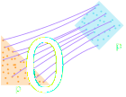
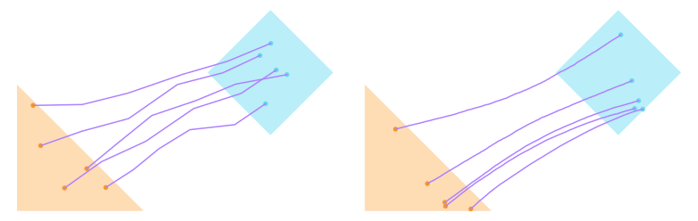
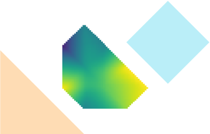
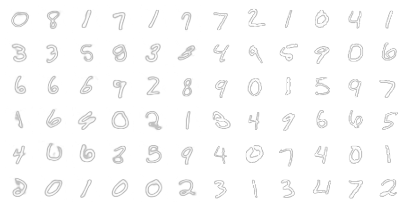

Iterative α-(de)blending and Stochastic Interpolants
In this post I'm looking into a paper the authors of which promise to make diffusion models simple to understand and implement, called Iterative α-(de)blending1, and find out that this promise is only partially fulfilled, at least personally. I reproduce the algorithm from the paper and apply it to the generation of MNIST digits, like I did in the previous series of posts, and find out that something is missing. As the title of the post reveals, we might find the missing ingredient in Stochastic interpolants.
The authors of the paper, like many others, found the topic of diffusion models difficult to enter. Usually, diffusion models involve many difficult concepts used from probability theory, stochastic differential equations, etc., and the fact that diffusion models can be approached in so many different ways doesn't help either. This was also my motivation for writing the blog series in diffusion models — although I'm not sure I was able to make the topic much more approachable. Thus, they set out to derive a simple model using only bachelor-level concepts. So let's have a closer look!
Iterative α-(de)Blending
As you might remember from the posts on diffusion models, the whole goal we are trying to achieve, is finding a mapping between two probability distributions, so that we can e.g. sample from a simple one, like a Gaussian, and map it onto a more complex one, like the distribution of MNIST digits, or a certain dataset of images. The distributions are generally complicated and many-dimensional, which makes it hard to visualize. To facilitate the discussion, I will give examples of distributions on the 2D plane. Thus, for example, we might have distributions \(p_0, p_1\), corresponding to a uniformly sampled triangle and rhombus, respectively.  In the image above, you can see a depiction of a possible mapping between these two distributions, as lines or paths connecting samples from \(p_0\) and \(p_1\). The paper spends some time introducing a way for calculating this mapping deterministically as a series of two basic operations they call \(\alpha\)-blending and \(\alpha\)-deblending. As the name suggests, these two operations are inspired by the blending of two images, e.g. alpha blending, where the blended image is a result of linearly interpolating between two images based on their alpha values.
The \(\alpha\)-blending operation is defined as linearly interpolating between a sample \(x_0 \sim p_0\), and a sample \(x_1 \sim p_1\), \[ \tag{1} \label{eq:blending_equation} x_{\alpha} = (1 - \alpha) x_0 + \alpha x_1 \] with \(x_{\alpha}\) being distributed according to \(p_{\alpha}\), while \(\alpha\)-deblending is the inverse operation (statistically), that is, starting from a blended sample \(x_{\alpha} \sim p_{\alpha}\), and ending up with pair of samples \( (x_0, x_1) \sim (p_0, p_1)\). As you might imaging, even though the blending operation is quite straightforward, the deblending operation is not as simple. There is no unique pair of \(x_0, x_1\) that blend to \(x_{\alpha}\), but a distribution, \(p(x_0, x_1 | x_{\alpha})\). Now, we notice that we can chain these operations; for example, if we have samples \(x_0, x_1\), we can blend them into sample \(x_{\alpha}\), and then we can deblend in some \(x_0', x_1'\), and then we can apply the blending again, with \(\alpha' = \alpha + \Delta \alpha\). We can repeat that for an arbitrary number of steps for an increasing value of the blending parameter \(\alpha\). A series of such blended points, \(x_{\alpha}\), can be considered as points on a path mapping \(x_0\) to \(x_1\). We can write code to produce such paths,
def iadb(N): a = 1.0 / N x0 = sample_triangle()[0,:] x1 = sample_square()[0,:] xt = (1.0 - a) * x0 + a * x1 points = [x0, xt] for _ in range(N-1): while True: x0 = sample_triangle()[0,:] x1 = (xt - (1.0 - a) * x0) / a if point_in_square(x1): a += 1.0 / N xt = (1.0 - a) * x0 + a * x1 points.append(xt) break return np.array(points)
Here, we first calculate the step size, \(\Delta \alpha = 1 / N\), and immediately calculate the first step, \(x_{\alpha}\) by sampling points from the triangle (\(p_0\)), and from the square (\(p_1\)), and using the blending equation, eq. \eqref{eq:blending_equation}. Then, to calculate all other points in the path, at each step we sample \(p_0\) and solve eq. \eqref{eq:blending_equation} to find a new point \(x_1\) — this is the deblending operation. If \(x_1\) happens to be in the square, we update \(\alpha\), and calculate a new \(x_{\alpha}\) using the blending equation again. With this function, we can generate a number of paths, and get a figure similar to the one above, and if we increase the number of steps significantly, you will see that the paths start to converge.  The authors of the paper spend some time proving that indeed this chain of operations converges in the limit of infinitesimal \(\Delta \alpha\). They further show that the direction one needs to move to, at a point \(x_{\alpha}\), coincides with the tangent of the deterministic path, and is equal to \(\bar{x}_1 - \bar{x}_0\), where the average is taken over all pairs of points \(x_0, x_1\) that could have blended in to \(x_{\alpha}\). The tangent, then, is a function of \(x_{\alpha}\), and \(\alpha\). Following the paper's notation, let's denote it as \(D(x_{\alpha}, \alpha)\).
It's not that difficult to approximate \(D(x_{\alpha}, \alpha)\) using a grid, for the toy problem we have been working on.

Above you see the polar angle (calculated as atan2(y/x)) of the field \(D(x_{1/2}, 1/2)\). The field is only defined for a region in the middle, and outside that region there are just no points \(x_{1/2}\) that deblend into points on the triangle and square. The field itself is calculated by first sampling a number of points in the two distributions and then producing all combinations of blended points for a particular \(\alpha\), and averaging the value of \(x_1 - x_0\) at the grid point corresponding to \(x_{\alpha}\). Below is the code the produces the field for a particular \(\alpha\), given points from each of the two distributions.
def calc_field(a, pts_a, pts_b, field_dim): # Calculate the field dimensions. X_max = np.max(np.r_[pts_a[:,0], pts_b[:,0]]) Y_max = np.max(np.r_[pts_a[:,1], pts_b[:,1]]) field = np.zeros(( int(X_max * field_dim) + 1, int(Y_max * field_dim) + 1, 2 )) # Calculate grid points of x_a for all combinations of points. x_a = ((1.0 - a) * pts_a[:,None,:] + a * pts_b[None,...]) x_a = (x_a * field_dim).reshape((-1, 2)).astype(int) # Calculate their 1D (ravelled) index for easy averaging using # bincount. indices = np.ravel_multi_index(x_a.T, field.shape[:2]) num_samples = np.bincount(indices) m = num_samples > 0 # The uv coordinates here are the unravelled coordinates. uv = np.arange(m.shape[0])[m] uv = np.vstack(np.unravel_index(uv, field.shape[:2])).T # Now calculate the average field. for i in range(2): w = (pts_b[None,:,i] - pts_a[:,None,i]).reshape(-1) Dmean = np.bincount(indices, weights=w) field[uv[:,0],uv[:,1],i] = Dmean[m] / num_samples[m] # Normalize field. norm = np.linalg.norm(field, axis=2) field[norm > 0.0] /= norm[norm > 0.0,None] return field
Training a neural network to learn \(D(x_{\alpha}, \alpha)\), is not very different, actually; points \(x_0\) and \(x_1\) are sampled from the two distributions, the blended sample, \(x_{\alpha}\) is calculated, and finally the loss, \[ \tag{2} \label{eq:loss} L = \left| D_{\theta}(x_{\alpha}, \alpha) - (x_1 - x_0) \right|^2 \] is backpropagated. The authors prove that in the limit of infinitesimal steps \( \Delta \alpha \rightarrow 0 \) , \[ \frac{dx_{\alpha}}{d\alpha} = \bar{x}_1 - \bar{x}_0 = D(x_{\alpha}, \alpha) \] where the expectation values are taken over all samples \(x_0, x_1\) which blend into \(x_{\alpha} \). This is an ordinary differential equation (ODE), and integrating it allows us to sample, to first-order, \[ \tag{3} \label{eq:sampling} x_{\alpha + \Delta \alpha} = x_{\alpha} + D(x_{\alpha}, \alpha) \Delta \alpha \] With this, we can adapt our diffusion model code from the previous blog post to train a neural network to generate MNIST digits, and we find that it produces even higher quality digits than our previous efforts, and with less implementation complexity.  We get an amazing Fréchet distance of about 3, while with the latent diffusion model I introduced in the previous blog post we got a Fréchet distance of 6. The code for the training and sampling step are really simple:
def do_step(model, x0): x1 = torch.normal(0, 1, size=x0.shape, device=device) alpha = torch.rand(x.shape[0], device=device).view(-1,1,1,1) x_alpha = (1.0 - alpha) * x0 + alpha * x1 pred = model(x_alpha, alpha.view(-1)) loss = torch.nn.functional.mse_loss(x1 - x0, pred) return loss def do_diffusion_backward(model, x, time_steps): x_alpha = torch.clone(x) alpha = torch.arange(time_steps+1, device=device) / time_steps for t in range(time_steps,0,-1): alpha_t = torch.full(x.shape[:1], alpha[t], device=device) pred = model(x_alpha, alpha_t) x_alpha += (alpha[t-1] - alpha[t]) * pred return x_alpha
which is just the application of equations \eqref{eq:blending_equation}, \eqref{eq:loss}, and \eqref{eq:sampling}.
Stochastic Interpolants
As we saw above, iterative α-(de)blending does a really good job at generating good quality samples and is really easy to implement, but one thing I'm missing is the motivation behind the method — how would you derive it from first principles. Instead, it feels ad-hoc, but then I came across a paper by M. S. Albergo et al about so called Stochastic Interpolants2,3.
Stochastic interpolants is a class of flow-based models, so before discussing it, let us first describe some key concepts used in flow-based models. First of all, we will replace the use \(\alpha\), which is used in the Iterative α-(de)Blending paper1, with the use of \(t\) for reasons that will become apparent soon. In the previous discussion, above, we already encountered a field, \( D(x_t, t) \), which was used to 'flow' samples from the density \(\rho_0\) to the density \(\rho_1\). It turns out, this field is a so-called velocity field; given some time-dependent function that maps samples between the two distributions, \(\mathbf{X}_t(x) \sim \rho_t\), where \(\rho_t\) is some intermediate density, the velocity field with respect to that mapping is given by its time derivative, \[ \tag{5} \label{eq:ode} \mathbf{v}_t(\mathbf{X}_t) = \frac{\partial \mathbf{X}_t} { \partial t } \] As the authors of the paper explain, in diffusion models the challenge is to design such time-dependent function to best reach a complex target distribution from a simple one, while maintaining computational efficiency. The equation above leads to a continuity equation, \[ \partial_t \rho_t + \nabla \cdot (\mathbf{v}_t \rho_t) = 0 \] Note that the continuity equation tells us that the amount of probability is conserved locally; it cannot be created nor destroyed, and it can only move by a continuous flow. With this the problem then becomes finding a velocity field that satisfies the above equation. This of course is not simple, and many papers have been written about this topic, but M. S. Albergo et al 2,3 tackle this problem by introducing what they call an interpolant, a time-dependent function of two variables, \( I_t(x_0, x_1) \), for which it holds that at \(t = 0\) and \(t = 1\), the interpolant is equal to \(x_0\) and \(x_1\) respectively. By randomly selecting samples \(x_0 \sim \rho_0 \), \(x_1 \sim \rho_1 \), the interpolant \( I_t(x_0, x_1) \) generates random samples \(x_t \sim \rho_t\). Thus, \(\rho_t\) is completely determined by the design of the interpolant, and only a velocity field needs to be calculated from the continuity equation. Note, that even though \(x_t = I_t(x_0, x_1)\) is a stochastic process, it is the continuity equation that makes the stochastic process equivalent to the process described in Iterative α-(de)Blending. After some derivations, the authors derive an objective for the velocity field, \[ \tag{5} \label{eq:loss_complex} L(\hat{\mathbf{v}}) = \mathbb{E} \left[ \left| \hat{\mathbf{v}}_t(I_t(x_0, x_1)) \right|^2 -2 \partial_t I_t(x_0, x_1) \cdot \hat{\mathbf{v}}_t(I_t(x_0, x_1))\right] \] interestingly, they also offer an alternative objective, \[ \tag{6} \label{eq:loss_simple} L(\hat{\mathbf{v}}) = \mathbb{E} \left[ \left| \hat{\mathbf{v}}_t(I_t(x_0, x_1)) - \partial_t I_t(x_0, x_1) \right|^2 \right] \] but they mention that this objective remains strictly positive at \( \hat{\mathbf{v}} = \mathbf{v} \) in general so it offers no baseline measure of convergence.
Looking at the interpolant, after having discussed Iterative α-(de)Blending, we immediately recognize the blending function \eqref{eq:blending_equation} as a certain choice of interpolant. Indeed, if we calculate the derivative of \(I_t(x_0, x_1) = (1 - t) x_0 + t x_1\), we get, \[ \partial_t I_t(x_0, x_1) = \partial_t \left( (1 - t) x_0 + t x_1 \right) = x_1 - x_0 \] and the loss in equation \eqref{eq:loss_simple}, becomes equivalent to that in equation \eqref{eq:loss}. Sampling, is then just integrating the ODE \eqref{eq:ode}, and of course, more sophisticated integration methods can be used, like Runge-Kutta.
Conclusion
In this blog post, we explored the surprising paper by E. Heitz et al, called Iterative α-(de)Blending, which explored the idea of implementing diffusion models as a chain of blending and deblending operations which produce a mapping between two probability densities. This method gave really good results compared to our previous latent diffusion model implementation, and required less effort to implement. No only that, but the diffusional model we introduced in the previous post, has instability issues close to the parameter boundaries. Even though the method is simple, I didn't feel it was well enough motivated in the paper, but coming across a different paper about so-called stochastic interpolants, it was obvious that there is a connection between the two methods. Now, I am not sure stochastic interpolants paper gives a better motivation for the method, but at the very least, I think I have a better understanding of diffusion models, and flow-based models. The more general theory of stochastic interpolants, especially the one in the second paper3, does give more flexibility in designing a particular diffusion model. In the second paper, for example, the authors introduce a stochastic differential equation (SDE) based model, which jointly trains the velocity field, but also a denoiser. I definitely recommend having a look at all 3 papers, as they are an interesting read. The stochastic interpolant papers in particular, are a lot more approachable than other papers discussing flow-based models.
-
E. Heitz, L. Belcour, T. Chambon -- Iterative α-(de)Blending: a Minimalist Deterministic Diffusion Model ↩↩
-
M. S. Albergo, E. Vanden-Eijnden -- Building Normalizing Flows with Stochastic Interpolants ↩↩
-
M. S. Albergo, N. M. Boffi, E. Vanden-Eijnden -- Stochastic Interpolants: A Unifying Framework for Flows and Diffusions ↩↩↩